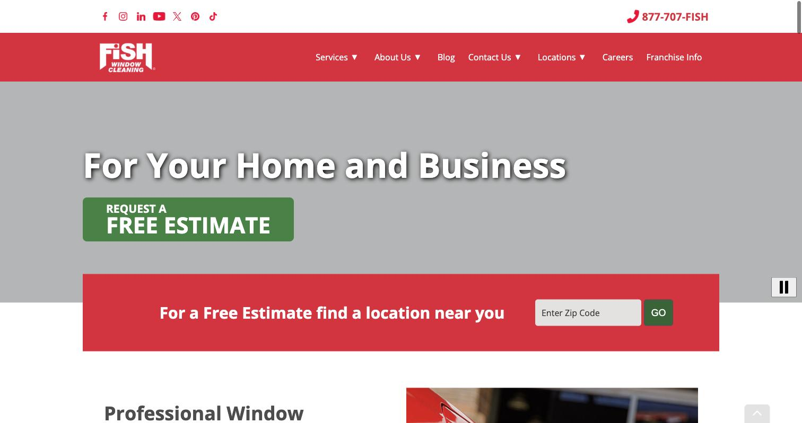
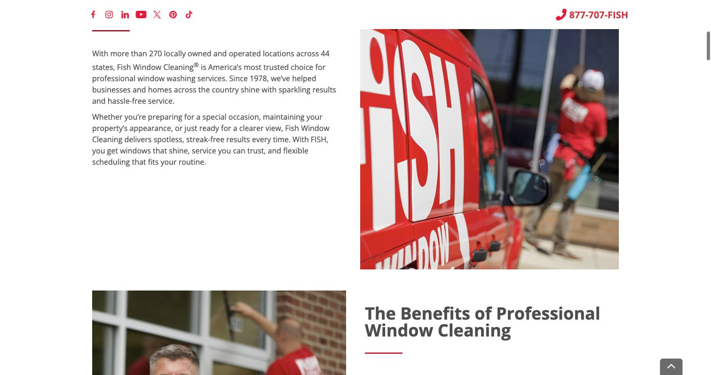
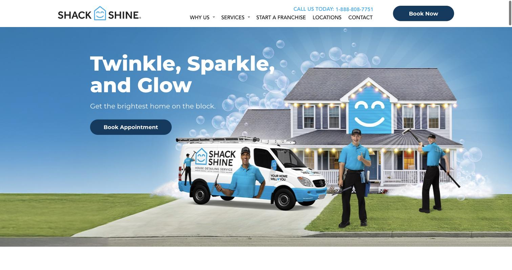
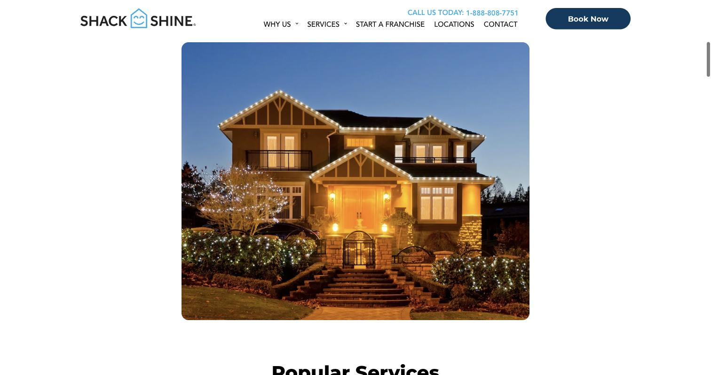
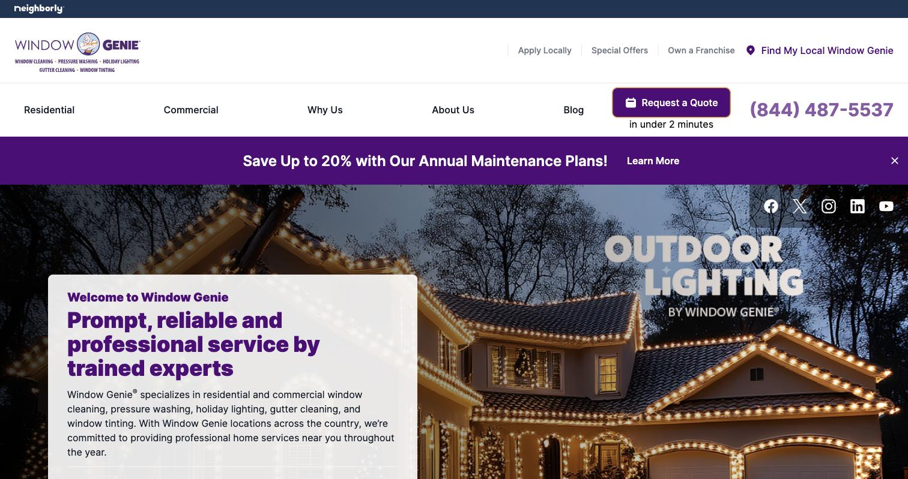
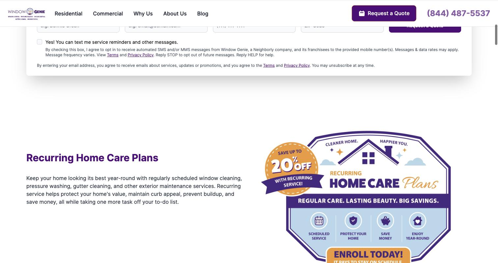

Summit Shine Window Care
Summit Shine Window Care is a locally owned, single-location window washing company based in Steamboat Springs, Colorado. We provide interior and exterior window cleaning, screen cleaning, gutter cleaning, and post-construction window detailing for homeowners, vacation rental managers, and commercial property owners throughout Routt County.
The people who use this site are homeowners and property managers in a mountain resort town who want to protect the view they pay a premium for: floor-to-ceiling windows facing Mount Werner, streak-free glass after a muddy mud season or a snowy winter, and panes clear of the hard-water spots left by irrigation and melting snow. They also include vacation-rental owners who need their glass doors and windows spotless before the next guest checks in, general contractors finishing a new build who need construction dust and stickers removed before a final walkthrough, and downtown shop owners who want inviting storefront glass for everyone walking down Lincoln Avenue.
Visitors come to the site to quickly answer three questions: what services are offered, what they cost, and whether this is a crew they can trust with ladders and extension poles on their property. Their primary tasks are checking the service menu and pricing, reading about the company's experience with mountain homes (steep roofs, second-story glass, hard water), and requesting a free quote or booking an appointment that fits a short remodeling window, a tight guest turnover, or the handful of clear days between snowstorms.


Fish Window Cleaning is the country's largest residential and commercial window cleaning franchise, and its homepage leads with a clear, benefit-driven headline ("For Your Home and Business") and a single prominent "Request a Free Estimate" button above the fold, plus a zip-code locator so a visitor can find their nearest crew immediately.


Shack Shine (a Neighborly brand) uses friendly, illustrated branding with a smiling house icon and uniformed crew members, which makes a routine chore feel approachable. The page quickly moves into a visual grid of its most popular services so a visitor can scan options without reading long paragraphs.


Window Genie organizes its main navigation by customer type (Residential vs. Commercial) so each visitor lands on relevant services right away, and it promotes a recurring home-care membership plan with a clear discount callout, showing how a service menu can also upsell a standing maintenance plan.
Summit Shine Window Care keeps the view you came to Steamboat Springs for. We hand-wash residential and commercial windows, screens, and glass doors to a streak-free shine, using soft water and squeegee techniques that hold up against hard-water spotting, pollen, and winter road grime. Whether it's a ski-in chalet with floor-to-ceiling glass or a storefront on Lincoln Avenue, our small crew shows up on time, works quietly around your day, and leaves nothing behind but clear glass.
Request a free quote and we'll have your windows sparkling before your next powder day, or before your next guests check in.
[A row of large mountain-facing windows streaked with melting snow, being wiped clean by a squeegee, with the ski slopes visible through the glass]
Summit Shine Window Care started in 2021, when childhood friends Jake Mercer and Casey Holt got tired of watching their neighbors' windows fog up with hard-water spots every spring runoff. What began as two guys with buckets, squeegees, and a list of neighbors' phone numbers turned into Steamboat Springs' go-to window washing crew, now serving homeowners, vacation rental managers, and small businesses across Routt County.
We grew up skiing these mountains and working odd jobs around town, so we know what mountain living does to a window: hard water from snowmelt and sprinklers, mud-season splatter, pollen in June, and grime on second-story glass nobody wants to climb a ladder to reach. We bring the right tools, insurance, and patience for all of it, and we treat every property, from a downtown storefront to a ski-in cabin, like it's our own.
We keep our crew small on purpose: fewer vans, more care, and a face you'll recognize the next time we're back.
[Two window washers in matching jackets standing beside a pickup truck loaded with ladders and cleaning poles, with Mount Werner in the background]
Every job ends with a satisfaction walk-through before we leave. Prices below are our typical starting rates for a single-story home or small storefront in Steamboat Springs; larger properties, extra-dirty post-construction jobs, and HOA contracts are quoted after a quick walk-around.
Interior and exterior hand-washing of standard residential windows, including sills and tracks. Our most-booked service for homes getting ready for spring runoff or a showing.
Exterior glass cleaning for storefronts, lobbies, and office windows on a weekly, biweekly, or monthly route. Keeps your entrance looking sharp for every customer who walks by on Lincoln Avenue.
Removal of construction dust, paint overspray, caulk residue, and manufacturer stickers from new-build or remodel windows, ready for a final walkthrough or listing photos.
Hand-cleared gutters and a downspout flush, booked alongside a window wash while we're already on the ladder. Recommended every fall before the first big snow.
Fast-turnaround interior and exterior glass cleaning, including sliding doors and railings, scheduled between guest checkouts and check-ins so your rental always photographs well.
Screens removed, hand-washed, and rehung; torn or sun-damaged screens replaced with new mesh on the spot.
Mineral-deposit treatment for windows affected by sprinkler overspray or snowmelt runoff, using a pH-balanced solution safe for tinted and low-E glass.
Extension-pole and ladder service for upper-story windows and steep mountain rooflines, done safely without needing access to the inside of the room.
Interior and exterior cleaning for flat and domed skylights, a common feature on Steamboat's A-frame and chalet-style homes.
A standing appointment four times a year that bundles a full window wash, screen check, and gutter glance, timed around mud season, wildfire smoke season, ski season, and spring runoff.
[Close-up of a squeegee pulling a clean streak across a glass pane, with soap suds still covering the rest of the window]
Summit Shine Window Care is based at 145 Lincoln Avenue, Steamboat Springs, CO 80487, and serves Steamboat Springs and the surrounding Routt County neighborhoods, including Fish Creek Falls, Strawberry Park, Mountain Village, Heritage Park, and the Stanley/Silver Spur area.
We're open Monday through Saturday, 8:00 a.m. to 5:00 p.m., and closed Sundays so our crew can get out on the mountain too. Call or text (970) 555-0148, or email us at hello@summitshinewindowcare.com, to check availability or request a free quote.
[A small shop storefront with a painted window and a parked service van with a ladder rack, dusted with light snow]